# 决策树
# 引言
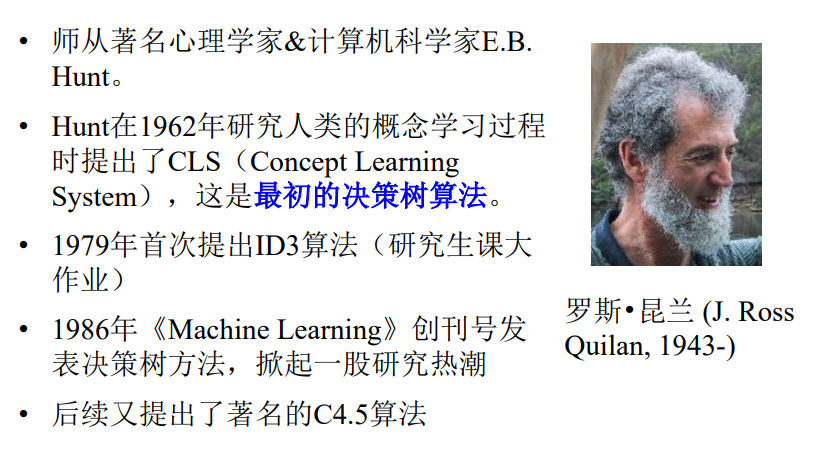决策树是应用最广泛的分类模型之一。其优点是：
- 直观，可解释性好
- 模型具有可读性
- 分类速度快
经典决策树算法：
- ID3（Iterative Dichotomiser）
- C4.5
- CART（Classification and Regression Trees）
技术路线：
- 决策树生成：遍历所有可能的特征属性，对树进行分枝
- 剪枝：适当剪除一些不必要的分枝，减少过拟合，获得更好的推广能力。
决策树涉及的三大技术：
- 决策特征的选择
- 决策分裂点的确定
- 决策树剪枝
# 决策树模型
定义：分类决策树是一种描述对数据实例进行分类的树形结构。决策树由结点和有向边组成。
- 内部节点：对应数据的一个特征（属性）
- 叶节点：对应数据的一个类别
决策树模型的特点：
- 分而治之的基本策略
- 以树形结构，根据事先定好的”判定问题“，进行决策
- 叶结点对应决策结果
- 内部结构对应属性测试
# 决策树学习
对于给定训练数据集：
其中表示第i个属性实例的第j个特征（属性），离散取值
表示第i个样本实例的类别标记
学习目的：不仅对训练数据有很好的拟合，而且对未知数据有很好的预测。
决策树的学习就是决策树的构建过程
# 技术路线
- 构建根结点，将所有训练数据都放在根结点。
- 选择一个“最优”特征，按照它的离散取值，将 上一节点中数据分割成不同子集。
- 对于分割的子集，如果能够基本正确分类（子集 中大部分数据都属于同一类），那么构建叶结点。
- 对于不能构建叶结点的子集，继续2-3步，直到所有子集都能构建叶结点。
存在两个情况，不能通过选择特征对数据集进行划分：
数据集为空
例如西瓜数据，分到某一个特征时，该特征下没有样本数据。
解决方案：标记为叶节点，其类别设定为其父节点所含样本最多的类别。
可用的属性为空，或所有样本在所有属性上取值均相等。
例如西瓜数据，分到某一个特征是，该特征下所有的属性取值均相同。
解决方案：标记为叶节点，类别设定为该节点所含样本最多的类别。
# 决策树特征选择
决策树划分的目的：每一个分支结点包含的样本尽可 能属于同一类别，即分支结点的“纯度”尽可能高。
# 基于信息熵的判据
信息增益
判据描述
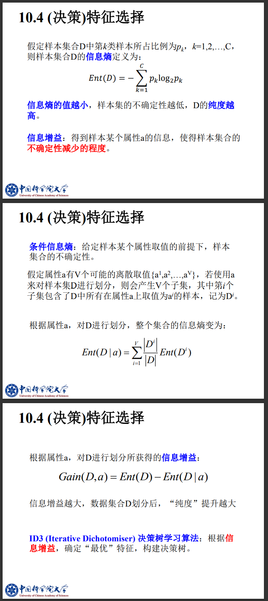案例
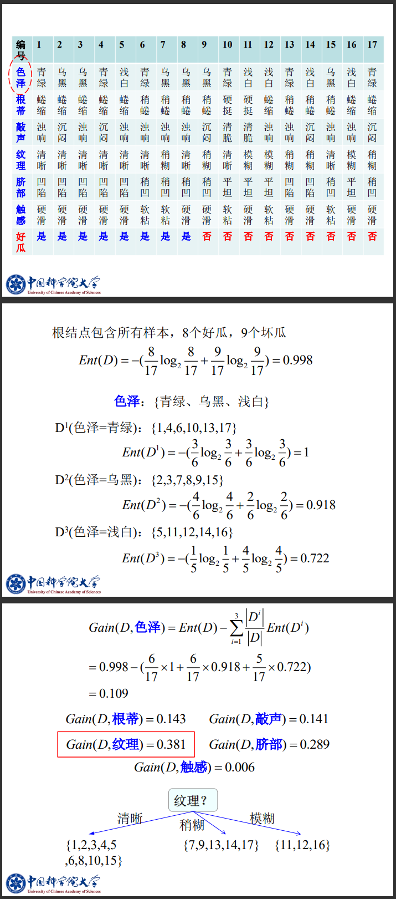信息增益率
判据描述
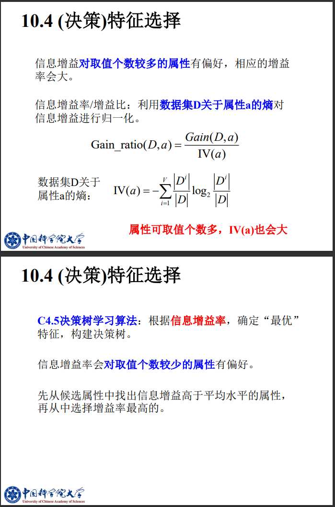
# 基于基尼指数的判据
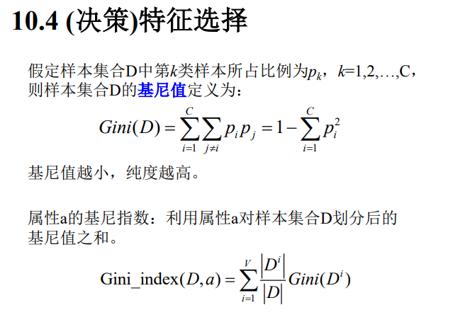# 决策树生成
# ID3
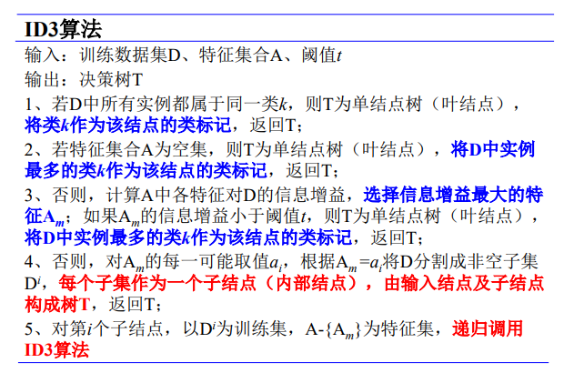# C4.5
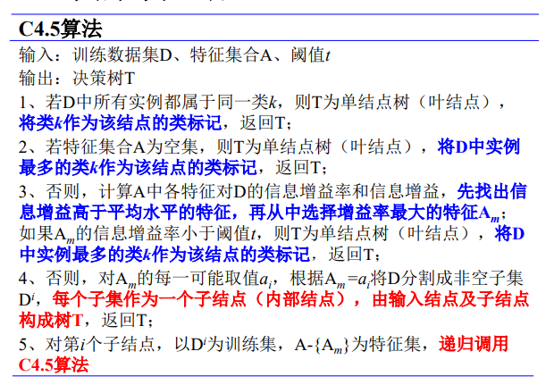# 决策树剪枝
ID3算法和C4.5算法都是递归的产生决策树，直到不能继续下去为止，容易产生过拟合：
- 学习过程过多的考虑如何提高分类正确率，忽略了推广性，构建出过于复杂的决策树
- 对训练数据很准确
- 对未知测试数据的分类性能很差
解决方法：剪枝！降低决策树复杂度。在模型复杂度和对训练数据的拟合之间进行平衡。
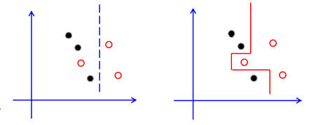根据剪枝处于的阶段不同可分为：
- 预剪枝：在生成决策树的过程进行剪枝，剪枝和树构建同时进行。
- 后剪枝：先生成决策树，再进行修剪。
核心问题：如何判断决策树泛化性能有提升？
留出法：从带标签的训练数据中划分一部分作为 “验证集”，用于评估训练好的决策树的测试性能 （泛化性能）。
通过在验证集上评估训练模型的分类精度，判别模型的泛化能力！
根据整体代价是否会减少来确定是否剪枝。
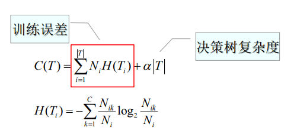
# 预剪枝
在决策树生成过程中，对每个结点在划分前先进行估计，若对该结点的划分不会带来决策树泛化性能的提升，则不进行该划分。
技术路线：
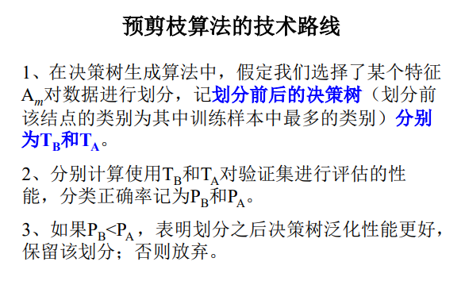案例
先划分数据集和验证集
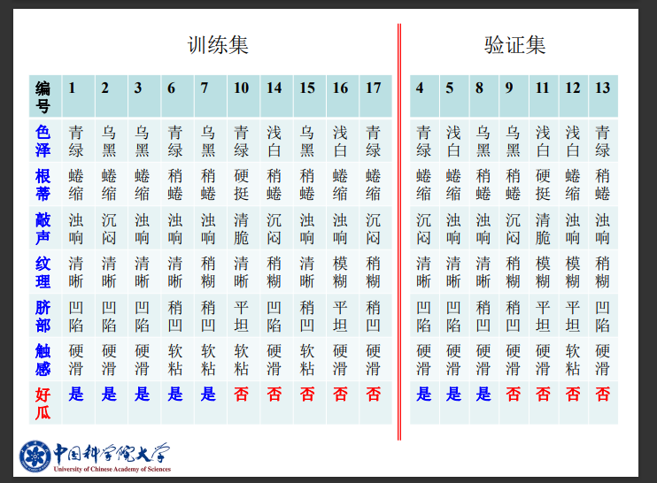挑选某一个特征作为初始根节点，例如脐部，分析利用其特征划分前后的正确率
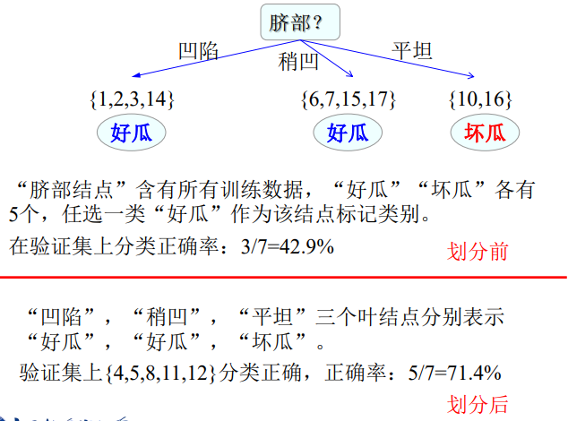划分后更好，则保留。
选择另一个特征，例如色泽，作为下一个结点，判别其划分效果。
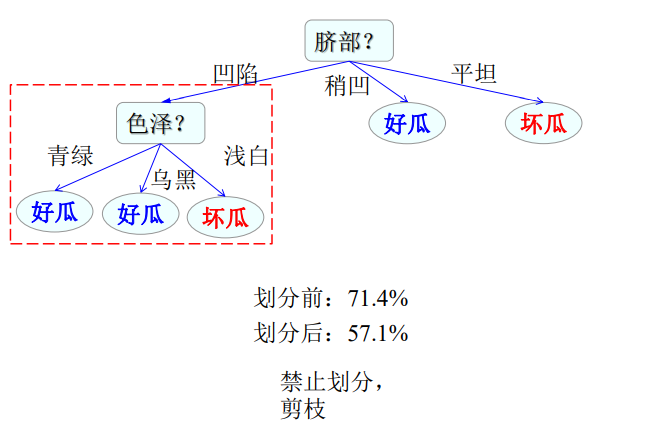可看到其划分后，没有划分前效果好，禁止划分，剪枝。
以此类推，计算其他特征划分效果。
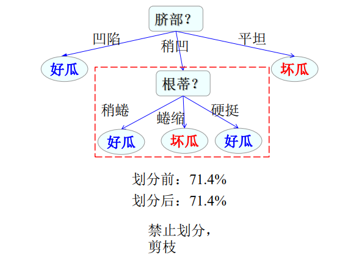得到最终的决策树
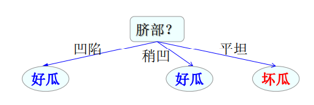
# 后剪枝
先从训练集生成一颗完整的决策树，然后自底向上地对非叶结点进行考察，若将该结点对应的子树替换为叶结点能带来决策树泛化性能提升，则进行替换（剪枝）。
基于泛化性能的后剪枝
技术路线：
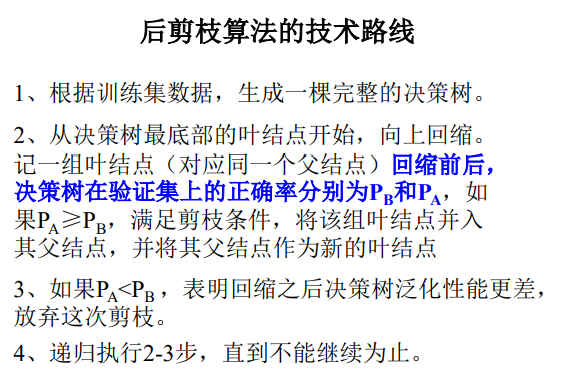案例
先生成一棵完整的决策树
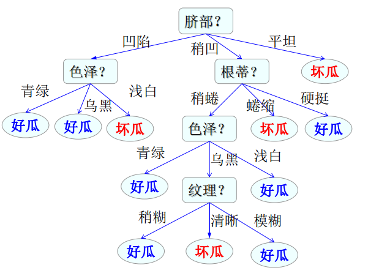自低向上，开始剪枝，先考虑纹理
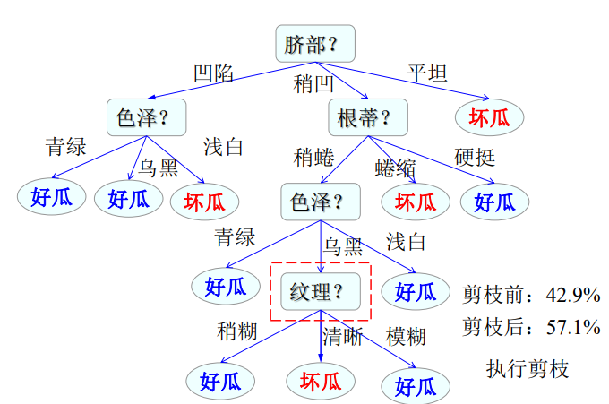剪枝后比剪枝前效果好，则执行剪枝。
接着考虑色泽
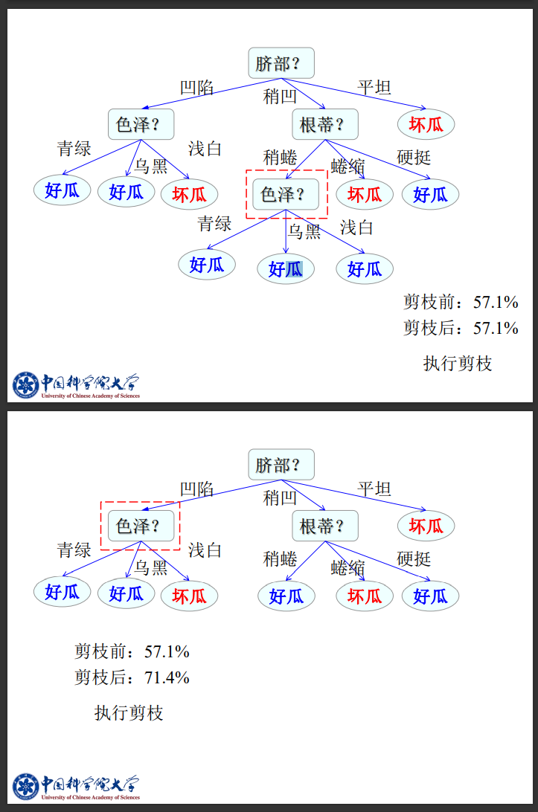然后是根蒂
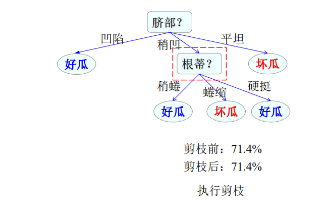最终的决策树
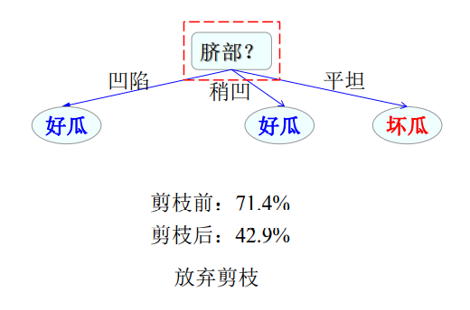
基于整体代价的后剪枝
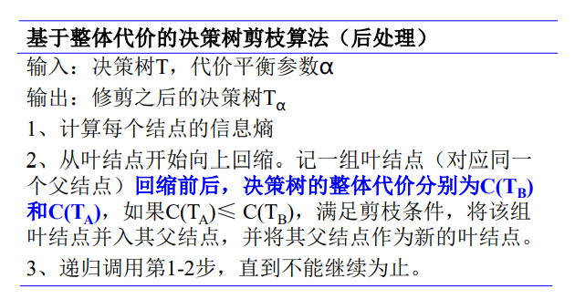
# 连续特征与缺失值处理
# 连续特征
离散特征：只能取固定个数的值，可根据具体取值进行结点划分。
连续特征：无限取值，不能根据具体特征取值对结点进行划分。
解决方案：
- 连续特征离散化：通过设置一定的取值区间，将连续取值转化成离散的区间取值。常用的离散策略是二划分。
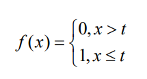
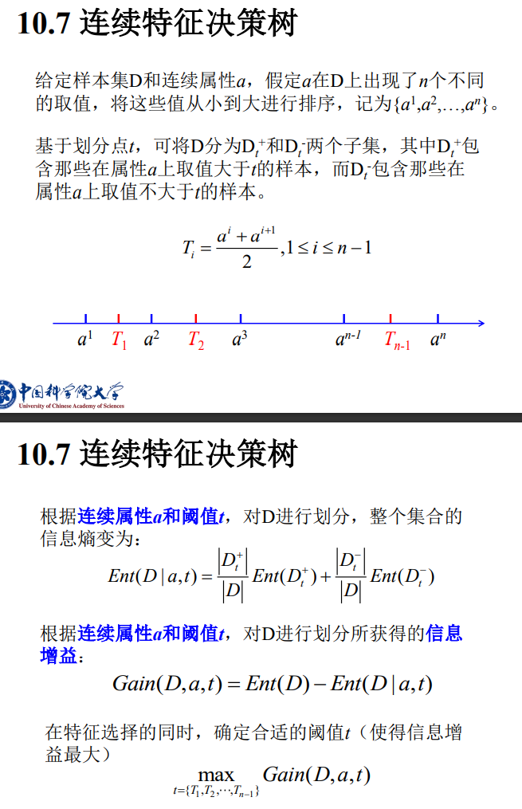案例
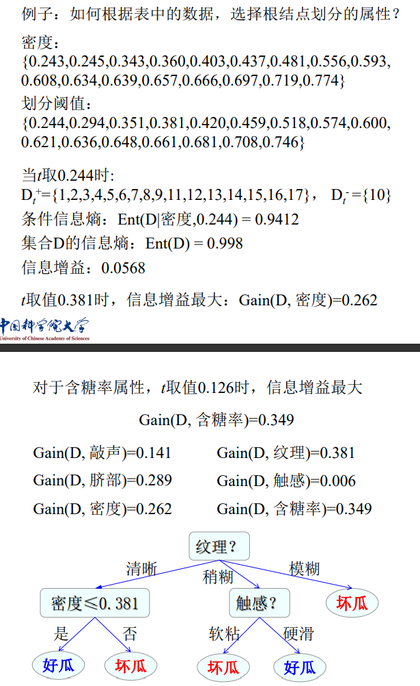
# 缺失值
不完整样本：某些属性值缺失的样本。
属性值缺失的情况下，如何进行划分属性选择（判断给定属性的优劣）？
方案：使用所有包含给定属性值的样本集合计算属性的信息增益/增益率/基尼指数
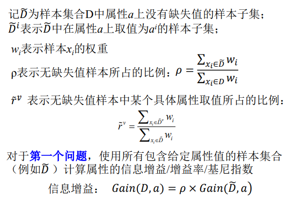给定划分属性，若样本在该属性上的值缺失，如何对样本进行划分？
方案：划分至所有的子结点，并根据 子结点所占父结点比例调整权值
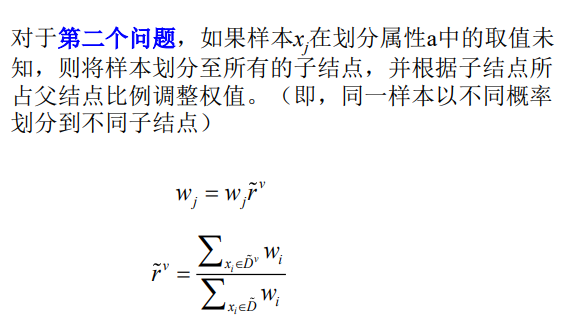
# CART决策树
CART，即Classification and Regression Tree，分类与归回树。CART的构建由特征选择，决策树生成和决策树剪枝三部分组成，即可以用于分类，也可以用于回归。
CART是一个二叉树结构，内部结点只有两个分支，即“是”和“否”。
- CART分类树使用基尼系数来进行特征选择
- CART回归树使用平方误差最小准则进行特性选择
CART决策树剪枝先根据数据自动产生一系列子树， 然后通过交叉验证选择最优的子树作为剪枝结果。
# 分类树
算法流程：
输入训练集D，基尼系数的阈值，样本个数阈值。
输出的是决策树T
算法从根节点开始，用训练集递归建立CART分类树
- 对于当前节点的数据集D，如果样本个数小于阈值或者没有特征，则返回决策子树，当前节点停止递归。
- 计算样本集D的基尼系数，如果基尼系数小于阈值，则返回决策子树，当前节点停止递归。
- 计算当前节点现有的各个特征的各个特征值对数据集D的基尼系数，选择基尼系数最小的特征A和对应的特征值a。根据这个最优特征和最优特征值，把数据集划分成两个部分D1和D2，同时建立当前节点的左右节点，左节点的数据集D为D1，右节点的数据集D为D2。
- 对左右子节点递归调用1-4步，生成决策树。
对生成的决策树做预测的时候，假设测试集例的样本A落到了某个叶子节点，而节点里面有多个训练样本，则对于A的类别预测采用的是这个叶子节点例概率最大的类别。
案例


连续特征与缺失值处理
连续特征
CART分类树算法对连续值的处理，思想和C4.5相同，都是将连续的特征离散化。唯一区别在选择划分点时，C4.5是信息增益比，CART是基尼系数。
具体思路：m个样本的连续特征A有m个，从小到大排列，则CART取相邻两样本值的平均数做划分点，一共取m-1个，其中第i个划分点表示为：。分别计算以这m-1个点作为二元分类点时的基尼系数。选择基尼系数最小的点为该连续特征的二元离散分类点。比如取到的基尼系数最小的点为，则小于的值为类别1，大于的值为类别2，这样就做到了连续特征的离散化。
注意的是，与ID3、C4.5处理离散属性不同的是，如果当前节点为连续属性，则该属性在后面还可以参与子节点的产生选择过程。
CART分类树算法对离散值的处理，采用的思路：不停的二分离散特征。
在ID3、C4.5，特征A被选取建立决策树节点，如果它有3个类别A1,A2,A3，我们会在决策树上建立一个三叉点，这样决策树是多叉树。
CART采用的是不停的二分。会考虑把特征A分成{A1}和{A2,A3}、{A2}和{A1,A3}、{A3}和{A1,A2}三种情况，找到基尼系数最小的组合，比如{A2}和{A1,A3}，然后建立二叉树节点，一个节点是A2对应的样本，另一个节点是{A1,A3}对应的样本。由于这次没有把特征A的取值完全分开，后面还有机会对子节点继续选择特征A划分A1和A3。这和ID3、C4.5不同，在ID3或C4.5的一颗子树中，离散特征只会参与一次节点的建立。
# 回归树
给定训练集 考虑如何生成回归树。
一个回归树对应输入空间的一个划分以及在划分单元上的输出值。假如数据空间被划分为单元，每个单元有一个固定的输出值。
CART回归树模型表达式为：
其中为第m个子区域，是对应的决策值，是指示函数。
对应了子区域内所有样本的决策值，根据平方误差准则应满足：
容易分析当为相应子区域内所有样本的均值时，达到最优。
案例
下面是一组数据：
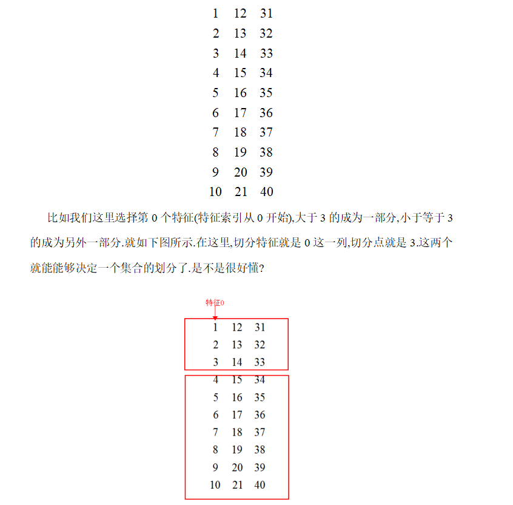 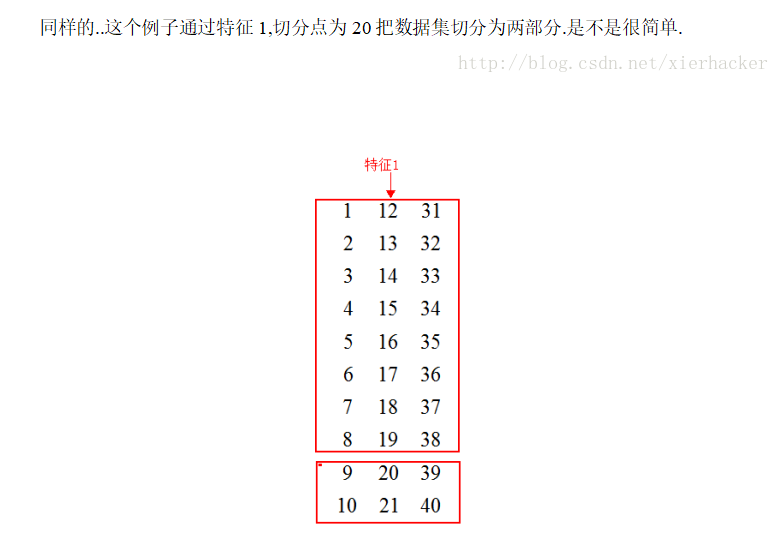
特征选择
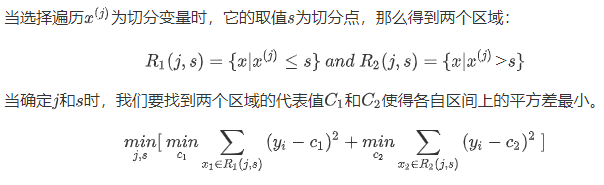
通常满足平方误差最小的和为区间上的平均
方法：遍历所有特征和可能的划分值，选择使用预测平方误差最小的组合，同时记录对应的均值，作为决策函数相应区域的取值。
算法流程

# 剪枝
- 自底向上进行剪枝，产生一系列剪枝后的子树；
- 通过交叉验证，在独立的验证数据集上对所有子树进行测试，选择最优一个子树。
核心问题：如何产生一系列剪枝后的子树？
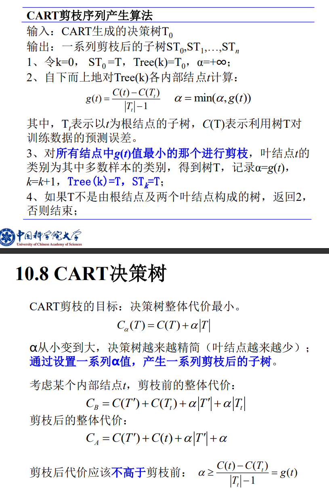# 决策树推广
# 多变量决策树
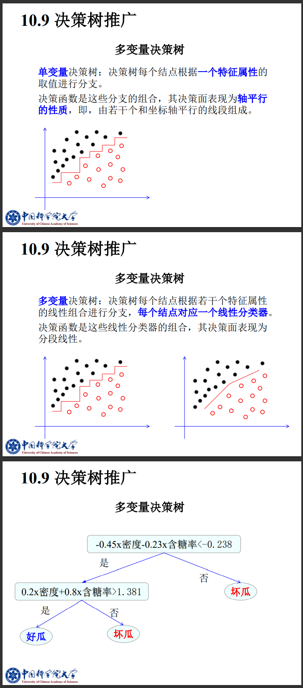# 随机森林
随机森林：通过随机方法构建多个决策树，利用决策树分类结果进行投票，得到随机森林的分类结果。随机森林泛化能力更强。
随机方法：生成决策树之前，先采用随机方法确定可用的训练数据和特征属性。
- 训练数据随机：随机采样一部分训练数据
- 使用特征随机：随机选择一部分特征属性
← 特征选择 模式识别典型应用——目标检测 →